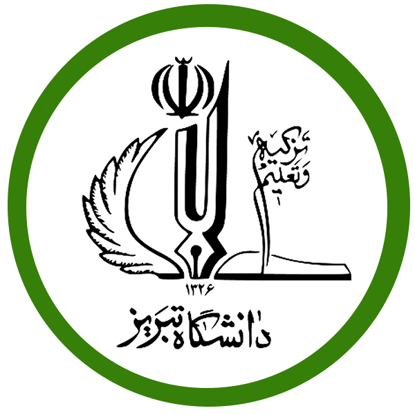

Dr. Ahmad Taghinezhad-Niar
Assistant Professor of Computer Engineering, University of Tabriz
I serve as an Assistant Professor in the Department of Computer Engineering at the University of Tabriz. My research focuses on distributed systems, scheduling algorithms, cloud computing, edge intelligence, and formal methods. Leading a dynamic research group, I am dedicated to solving these complex challenges while fostering meaningful collaborations with industry partners to create impactful, real-world solutions.
I actively seek passionate students and value building international partnerships. If you are interested in contributing to our research initiatives or exploring collaborative opportunities, I encourage you to reach out.
- Email: a0taghinezhad@gmail.com
- Email: a.taghinezhad@tabrizu.ac.ir
- 
-

Recent Publications
- Taghinezhad-Niar, Ahmad.,& Taheri, Javid. "Security , Reliability , Cost , and Energy-aware Scheduling of Real-Time Workflows in Compute-Continuum Environments." IEEE Transactions on Cloud Computing (2024). JCR-Q1, IF: 6.5
- Taghinezhad-Niar, Ahmad.,& Taheri, Javid. "Reliability, Rental-Cost and Energy-Aware Multi-Workflow Scheduling on Multi-Cloud Systems" IEEE Transactions on Cloud Computing (2023). JCR-Q1, IF: 6.5
- Taghinezhad-Niar, Ahmad., Pashazadeh, Saeid., & Taheri, Javid. "QoS-aware online scheduling of multiple workflows under task execution time uncertainty in clouds." Cluster Computing, Springer (2022). JCR-Q1, IF: 4.4
- Taghinezhad-Niar, Ahmad., Pashazadeh, Saeid. , & Taheri, Javid. "Energy-efficient workflow scheduling with budget-deadline constraints for cloud." Computing, Springer (2022). JCR-Q2, IF: 3.7
- Taghinezhad-Niar, Ahmad, Saeid Pashazadeh, and Javid Taheri. "Workflow scheduling of scientific workflows under simultaneous deadline and budget constraints." Cluster Computing, Springer (2021): 1-19. JCR-Q1, IF: 4.4
- Taghinezhad-Niar, A., & Valizadeh, P. “A Fault Tolerant Multi-Controller Framework for SDN DDoS Attacks Detection”. International Journal of Web Research (2022). ISC
- Taghinezhad-Niar, A. (2024). A Client-Centric Consistency Model for Distributed Data Stores using Colored Petri Nets. 2024 10th International Conference on Web Research (ICWR), 309–314.
- Taghinezhad-Niar, A., & Valizadeh, P. “DDoS Attacks Detection in Multi-Controller Based Software Defined Network”. 8th International Conference on Web Research, ICWR 2022. IEEE.
- Taghinezhad-Niar, A., & Pashazadeh, S. “Modelling and analysis of the monotonic read consistent distributed system using coloured Petri net”. 2016 Eighth International Conference on Information and Knowledge Technology (IKT).
- Taghinezhad-Niar, A. & Javadzadeh, T & Farzinvash, L. 2017. “Modeling of Resource Monitoring in Federated Cloud using Colored Petri Net”. Knowledge-Based Engineering and Innovation (KBEI), 2017 4th International Conference on IEEE.
Reviews for
- Mathematics and Computers in Simulation - Elsevier- Journal JCR- Q1
- Reliability Engineering & System Safety - Elsevier Journal - JCR- Q1
- Scientific Reports, Springer, JCR-Q1
- Transactions on Mobile Computing, IEEE, JCR-Q1
- IEEE/CAA Journal of Automatica Sinica- IEEE- JCR-Q1
- Journal of Supercomputing- Springer Journal- JCR- Q2
- Cluster computing- Springer Journal- JCR-Q1
- Computing- Springer Journal- JCR-Q2
- Indonesian Journal of Electrical Engineering and Computer Science- JCR- Q3
- 8th International Conference on Web Research (ICWR2022), 11-12 May 2022 -IEEE Conference
Awards & Certifications
- Recieved the recruitment plan in the executive board award from National Elites Fundation of Iran, 2023.
- Recieved the Sayyad Shirazi award from National Elites Fundation of Iran, 2022.
- Admitted as an Exceptional Talent for Ph.D. programs, 2021.
- Participate in Erasmus Eu project , University of Bonn, Bonn, Germany, Feb 2018
- Practical Workshop on Wireless Networks Security and Ethical Hacking, University of Tabriz, Tabriz, Iran, 2017
- 1st Place - Ph.D - Software Engineering- 2017
- 2st Place - Master of Science - Software Engineering 2015-2017
- Top student - Bachelor - Software Engineering
- Honored Person in Iran Periodical Technology Competition (“Fannavard”) as a Full stack developers - 2016
- Honored Person in ICT-Sharif Competition as a Programmer - 2020